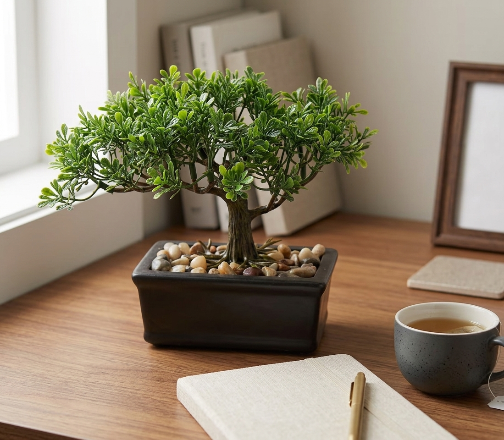

A realistic artificial bonsai tree in a ceramic pot — the quiet, grounding presence of Japanese garden design, with zero watering required.

No watering schedule, no pruning skill required, no risk of it dying on a busy week — it just always looks its best.
The textured wood trunk and layered juniper foliage read as a real, mature bonsai from across the room.
Drops straight into a desk, shelf, or entryway and immediately adds a calming, intentional design note.
Real bonsai take years of careful training to shape. This faux version arrives already styled — full canopy, natural-looking trunk, and a finished ceramic pot with decorative stones.
It's a low-effort way to bring a piece of Japanese garden tradition into a home office, bookshelf, or living room console.
A small green accent that doesn't compete with your monitor setup.
A calm first impression as soon as you walk in the door.
Fills an empty gap between books without needing plant care.
The trunk texture and layered leaves are designed to read as realistic from normal viewing distance.
No watering, sunlight, or trimming — an occasional dusting is all it needs.
Yes — it arrives already potted in the ceramic container shown, ready to place.
A realistic faux bonsai in a ceramic pot — see current pricing and availability on Amazon.
Check Price on Amazon →